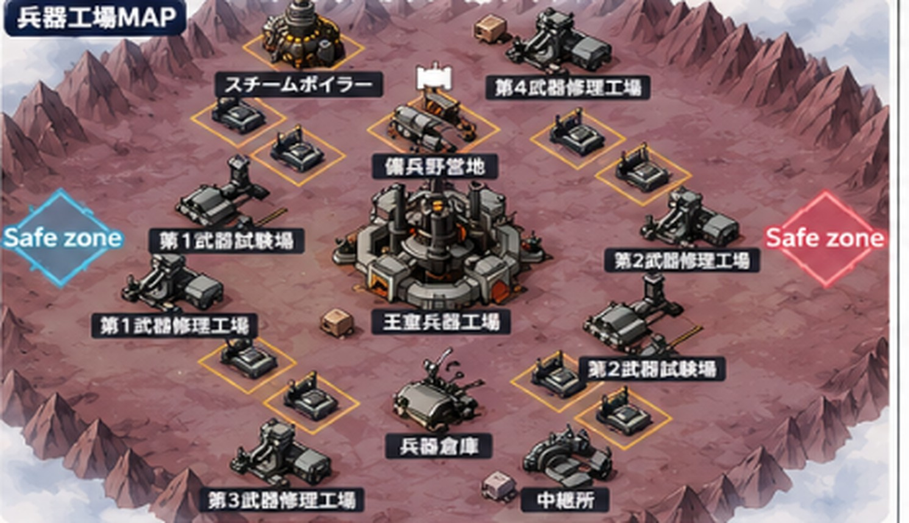
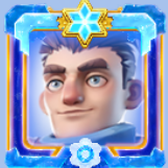
トーマス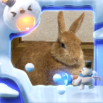
まぁにぃ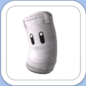
特殊諜報員K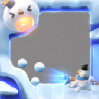
にょり助おじさん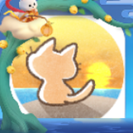
★くりちゃー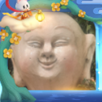
★さとりーみっく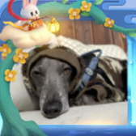
Ricky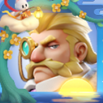
peace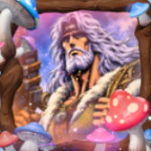
★KENSHI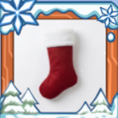
★コンコルド試験場2つを取って守り切る
初回6000＋毎分1200が勝敗のすべて
28人で全施設に駐屯を置く
修理工場も2人ずつで厚くする
王室は終盤に一気に落とす
それまで手を出さない
このマップは自陣＝左側のSafe zoneで作成。
Safe zoneが左右逆になる場合は、配置位置（担当施設・玉拾いゾーン）を左右反転させること。
出し方：①は自分の担当施設へ。②③は試験場の増援、④は近くの施設。⑤は味方の集結に乗る（終盤は王室集結へ）。⑥は採集。施設が満員の時は近くの自陣施設か採集へ。アリスの①は開幕に試験場2へ集結、ちょいちょいの①は第2フェーズ開放まで集結参加。玉拾い班（緑の6人）は集結に乗らない。名前の横のA〜Dは担当ゾーン（1枚目マップで色分けしたエリア）。奪還の集結が出たら落ちる施設の近くで待機し、割れた直後に拾って即帰還。
出欠確認。ダイヤバフはアリス・peace・さとりーみっく・ちょいちょいに集中。治療加速は温存
アリス→試験場2、さとりーみっく→試験場1へ1分集結。修理工場班も同時に確保。奪ったらpeaceが試験場2を引き継ぐ
ちょいちょいが兵器倉庫を集結で確保。王室にはまだ手を出さない
同格は残り15分、格上は残り5分でアリス・peaceが集結。全員の⑤が乗る
試験場2つの防衛が最優先。敵寄りの修理工場は取られてもOK
アリスとpeaceで敵の試験場へ同時着弾。装備の入れ替えを封じる
相手の都市はガラ空き。アリス・ちょいちょい・まこ珍で都市攻撃、着弾前に戻る
試験場を連弾でリセットし続ける。採集と玉拾いを取り切る